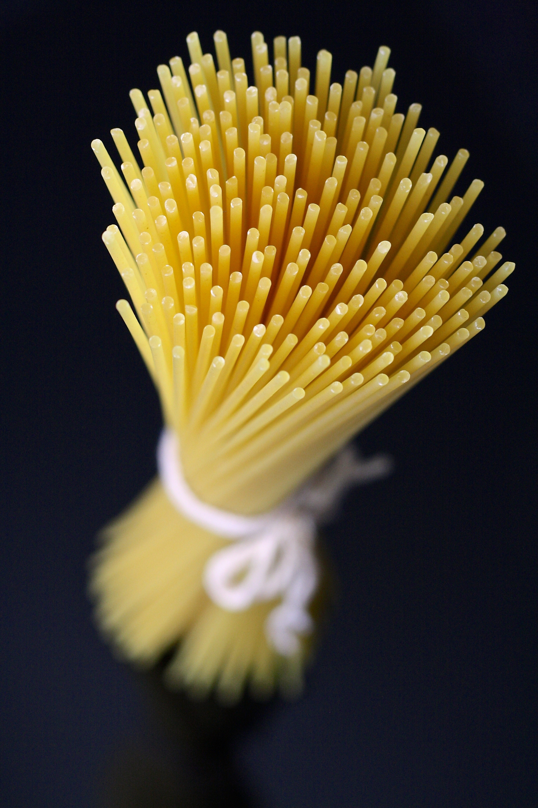

HomePage
Spaghetti Bolognese
Recipe feeds four people. Enjoy with your favourite vegetables.
Ingredients
-
200g of wholemeal spaghetti
-
500g beef mince (5% fat)
-
1 large onion
-
1-4 cloves of garlic depending on taste
-
worcestershire sauce
-
100-500g cheddar cheese

Photo by Pixabay
Method
-
Fry mince and onion simultaneously, breaking up mince and turning over to cook evenly.
-
Add garlic and worcestershire sauce to mince, turn down heat then cover.
-
Boil salted water and add spaghetti. Cook until soft.
-
Serve with grated cheese on top.